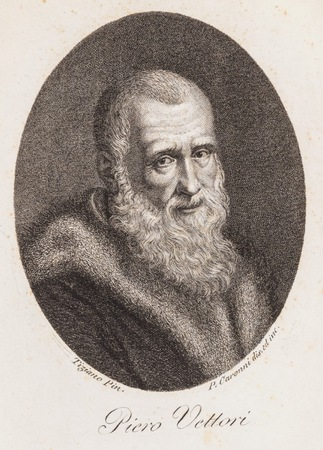

Home
(current)
Chi siamo
Il progetto
Catalogo
Lista
Autori
Date
Cerca
La Biblioteca di Racine

Cognome e nome:
Vettori, Piero
VIAF
Sesso:
M
Nazionalità:
italiana
Data di nascita:
3 luglio 1499
Luogo di nascita:
Firenze
GeoNames
Data di morte:
19 dicembre 1585
Luogo di morte:
Firenze
GeoNames
Professione:
scrittore, filologo e umanista
Per saperne di più :
https://www.treccani.it/enciclopedia/piero-vettori_%28Dizionario-Biografico%29
Treccani
Controllo di autorità:
VIAF (EN) 73960199
·
ISNI (EN) 0000 0001 0915 8021
·
SBN IT\ICCU\CFIV\115694
·
LCCN (EN) n81032116
·
GND (DE) 119263653
·
BNF (FR) cb12515652m (data)
·
BNE (ES) XX1765267 (data)
·
NLA (EN) 35765696
·
BAV (EN) 495/32712
·
CERL cnp01302565
·
WorldCat Identities (EN) lccn-n81032116
Ti potrebbero interessare anche
Giuseppe Giusto Scaligero
1540-1609
Umanista
Vai alla pagina
Il Cinquecento a Firenze
Un viaggio alla scoperta della Firenze cinquecentesca
Vai alla pagina
Daniel Heinsius
1580-1655
Filologo
Vai alla pagina